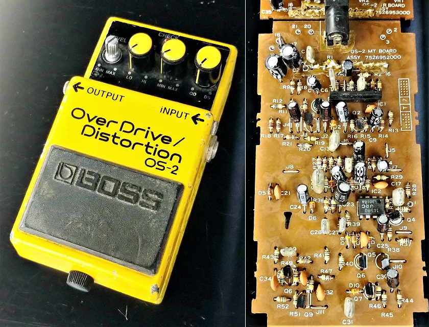
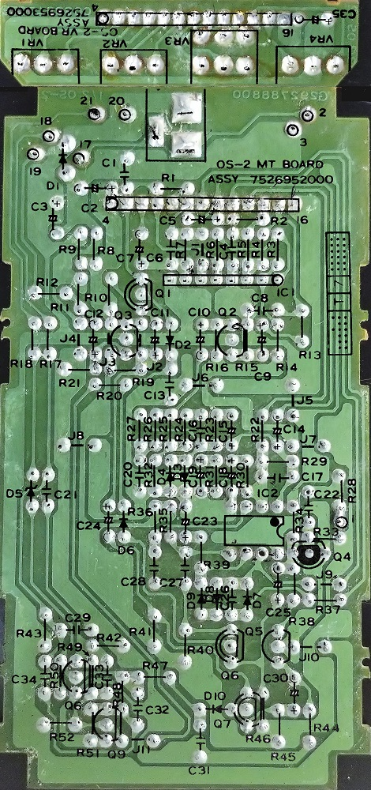
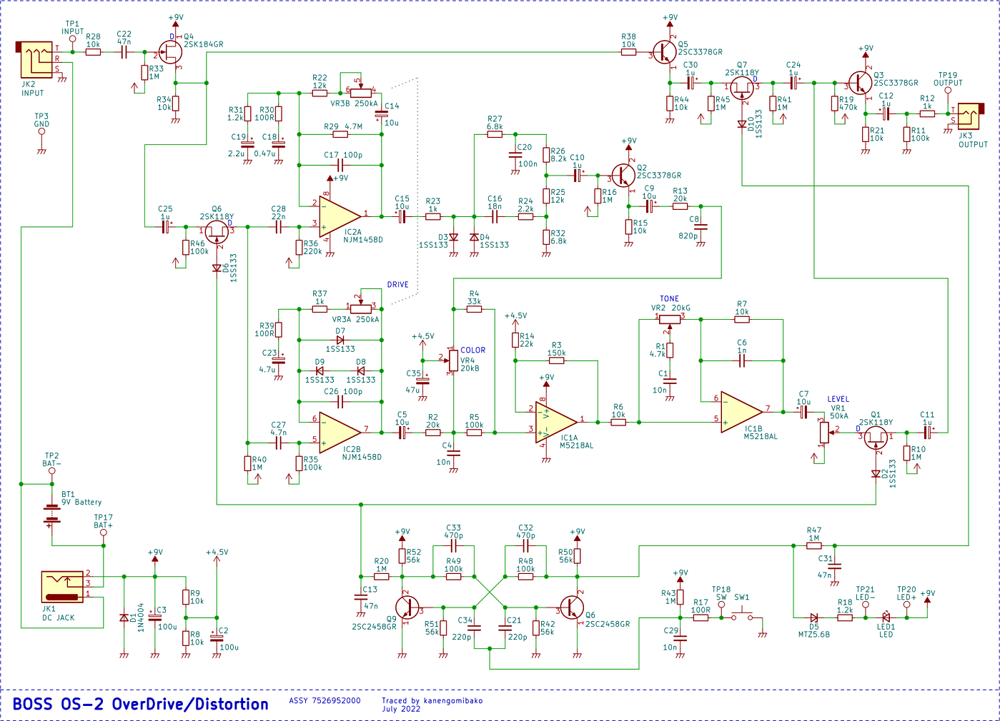
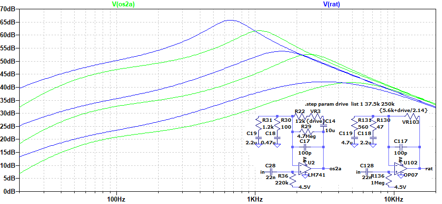
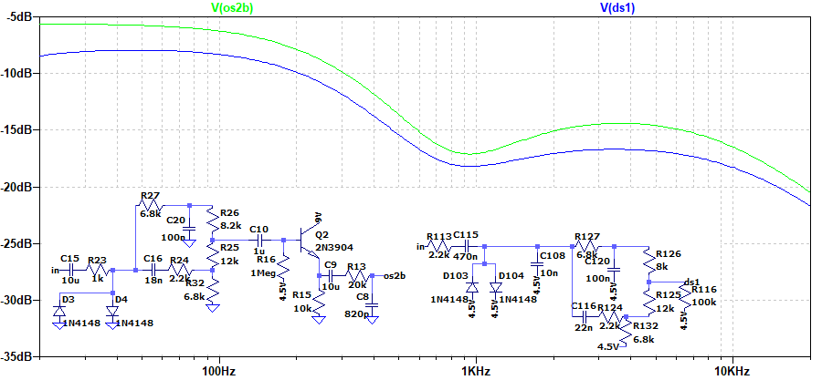
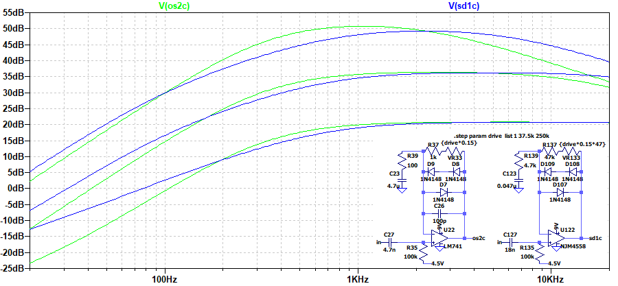
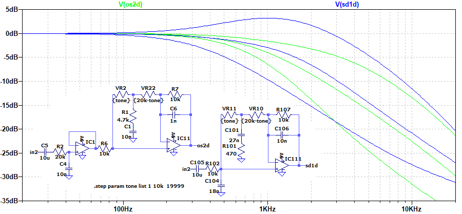

BOSS OS-2 OverDrive/Distortion 解析
2022年07月29日 カテゴリー：修理・改造・解析

製造年不明、古いボロボロのジャンク状態のBOSS OS-2 OverDrive/Distortionを手に入れました。交換となる部品が多いため修理はせず、回路解析のみを行いました。KiCadとLTspiceの回路図データ等はGitHubにあります。※LTspice用データはオペアンプをUniversalOpamp2にしてあります。
▽基板画像

基板上の印字を重ね合わせています。電解コンデンサの極性表示がなかったので、「＋」を追加しました。Q6が2つありますが、回路図上もそのままにしています。
▽回路図

C27、R29の値等、出回っている回路図とは異なる部分がいくつかあります。C25は通常入力FET側が+ですが、画像検索で出てきた他の個体もこの向きなので、付け間違いというわけではなさそうです。DS-1やSD-1といった他の機種とは少し違っており、この機種独自の設計となっています。
▽シミュレーション
- DS側増幅部（RATと比較）

OS-2の方が高音域寄りです。C18を1μFにするとほとんど同じになります。
- DS側トーン（DS-1と比較）

OS-2のDS側にトーンコントロールがあるわけではありませんが、DS-1のトーンを40%にした状態に似ていることがわかります。
- OD側増幅部（SD-1と比較）

OS-2はかなりゲインが高くなるため、DRIVE半分（37.5kΩ）まででの比較です。公式サイト記載の「伝統のODサウンド」は、OD-1やSD-1を意識してあるのではないかと思います。
- OD側トーン（SD-1と比較）

OS-2の方は、OD側の一部と最後のトーン回路を合わせたものです。SD-1の方が可変幅が広くなっています。